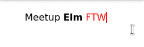

Elm & Contenteditable
Tout n'est pas perdu !
- Maître de conférences au Mans
- Co-fondateur de Voxolab
- Directeur Technique d'Allo-média
Et bien sûr…
Libriste et Vimiste convaincu :-)
Vimebook.com
Mon besoin
Pouvoir éditer du texte "riche" contenant du HTML, le tout avec Elm
Contenteditable
<div contenteditable="">
Meetup <strong>Elm</strong> <span style="color:red;">FTW<span>
</div>

Mais avec Elm,
notre vue ne fait qu'afficher notre modèle
Le contenu du contenteditable doit être dans le modèle,
et là…
En Elm
- Comment gérer la position du curseur ?
- Les sélections possibles ?
- Le fait que la donnée soit du HTML ?
Première approche
Draft.js
Mais…
- Duplication des états Elm/React
- "onclick" sur les éléments compliqué
- Performances insatisfaisantes
- React !
Deuxième approche
CKeditor
Bons côtés
- Rapide et fonctionnel
- JS classique
Mais…
- Duplication des états Elm/React
Dernière approche
WebComponents
L'idée
- Garder contenteditable
- Créer un nouvel élément HTML
- Mapper le modèle Elm dans un attribut
- Encapsuler le comportement JS
Mais tout n'est pas rose
Chrome uniquement :-(
Les bon côtés
- On reste au maximum dans Elm
- Pas de duplication d'état
- Elm continue à gérer quasi tout le DOM
- Code JS bien encapsulé
et cerise sur le gâteau…
ELM debugger
Changer le modèle Elm…
…change l'attribut du webcomponent…
…met à jour le contenteditable.
La boucle est bouclée !